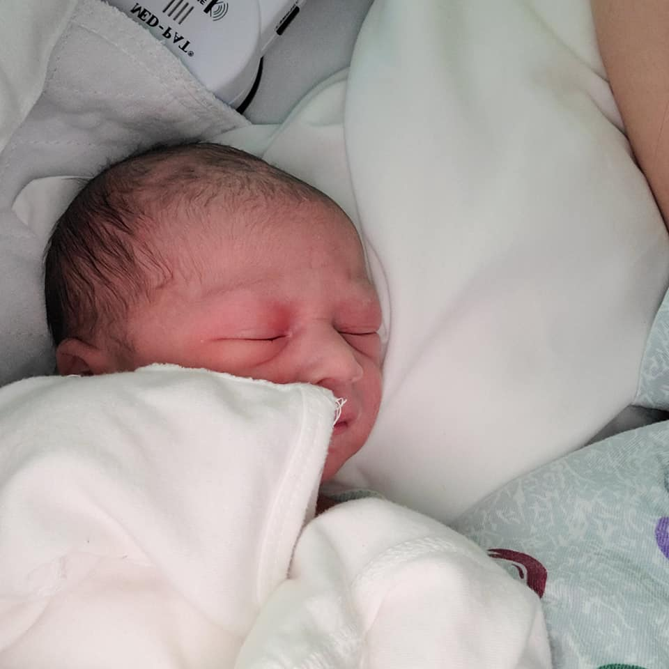
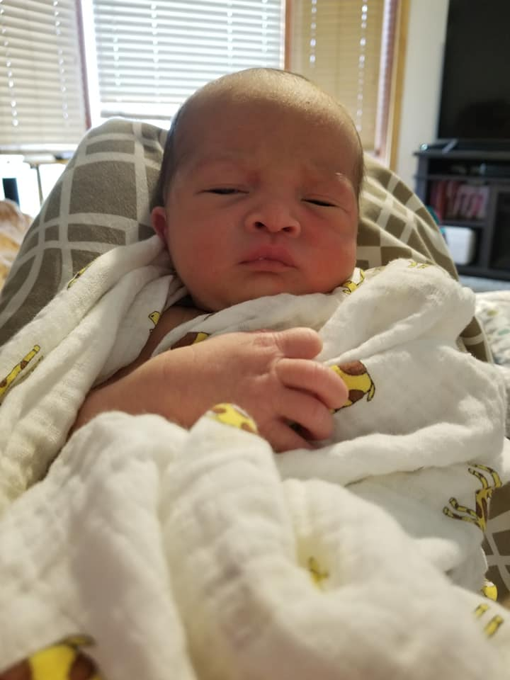
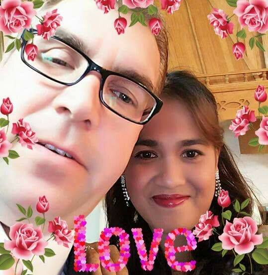
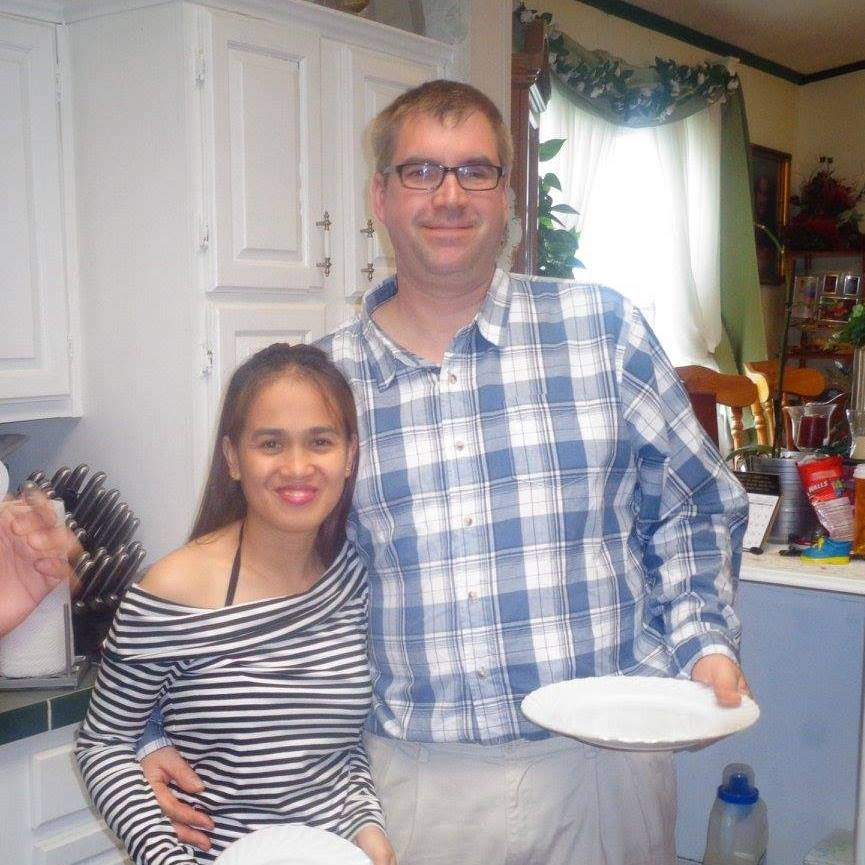

January 19, 2021
Isaac is now a big brother with the arrival of, Gabriel Alfred Johnson.
Experience is the best teacher they say, and I guess it is true. It is much easier with the second.
December 25, 2018
The couple turn into a couple with the arrival of their firstborn, Isaac Richard Johnson.
It's a mix emotion of anxious excited and anxious, anxious not knowing if I can be a good mom.
April 19, 2017
Our forever started on this day. When we said I dos to all the wedding vows. And there's no taking back on those words.
After all, I spent 32 years of being single, and he spent 43 years of singleness. We are no longer me rather an us.
November 21, 2015
Our story started on this day, as Paul Harold Johnson and Frelin Cube Ogario. Living our separate and distant lives.
But our love for each other just made thi morning and evening difference seems bearable. And the future of being in each other's arms is our common goal.